Giới Thiệu
Chào mừng bạn đến với Thế Giới Siêu Xe — nơi hội tụ những mẫu xe đẳng
cấp và mạnh mẽ nhất hành tinh.
Các thương hiệu siêu xe như Lamborghini, Ferrari, Porsche, Mercedes-AMG
và Bugatti đều là biểu tượng toàn cầu về tốc độ, thiết kế và công nghệ.
Mỗi hãng mang một triết lý riêng: từ sự táo bạo của Lamborghini, tinh
thần đua xe của Ferrari, sự chính xác của Porsche, sức mạnh của AMG đến
đỉnh cao xa xỉ của Bugatti.
Lamborghini
Thành lập: 1963 bởi Ferruccio Lamborghini tại Sant’Agata Bolognese, Ý.
Đặc trưng: Thiết kế góc cạnh, mạnh mẽ, lấy cảm hứng từ hình ảnh con bò
tót. Mẫu xe nổi bật: Miura (siêu xe đầu tiên), Countach, Aventador,
Huracán, Urus SUV, Revuelto hybrid. Triết lý: Kết hợp công nghệ tiên
tiến với phong cách táo bạo, mang đến trải nghiệm “Driving Humans
Beyond”.
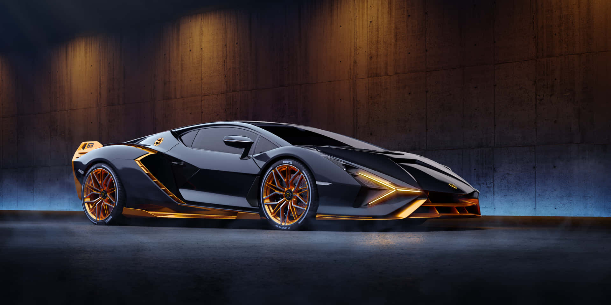
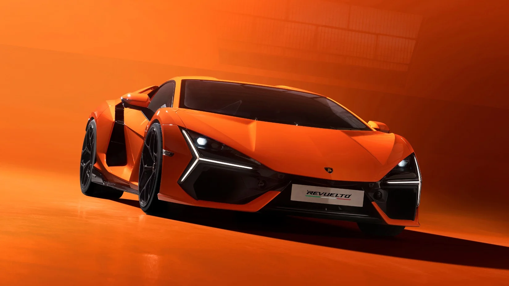

Ferrari
Thành lập: 1947 bởi Enzo Ferrari tại Maranello, Ý. Đặc trưng: Biểu tượng
“Ngựa chồm” (Prancing Horse), gắn liền với tinh thần đua xe F1. Mẫu xe
nổi bật: 250 GTO, F40, Enzo, LaFerrari, SF90 Stradale, Purosangue SUV.
Triết lý: Kết hợp truyền thống và đổi mới, tạo ra những chiếc xe vừa
mang tính nghệ thuật vừa đạt hiệu suất cực cao.
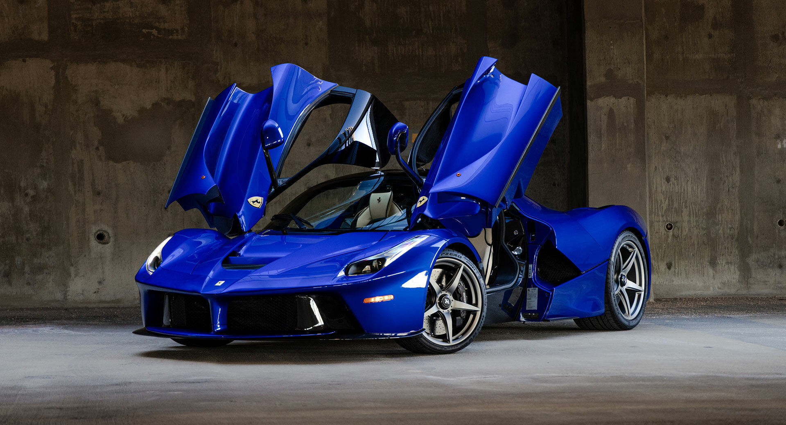
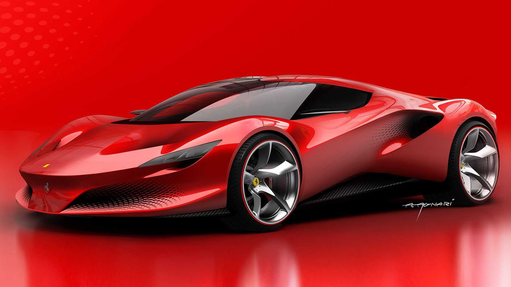
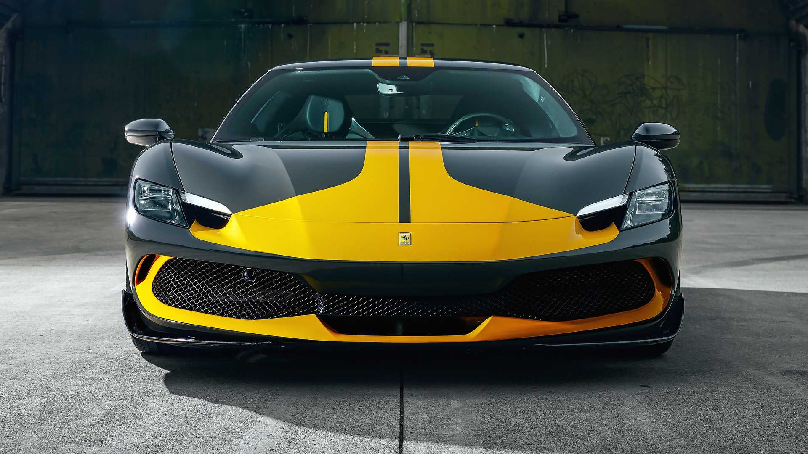
Porsche
Thành lập: 1931 bởi Ferdinand Porsche, trụ sở tại Stuttgart, Đức. Đặc
trưng: Chính xác, bền bỉ, nổi tiếng với dòng 911. Mẫu xe nổi bật: 911
Turbo, 959, Carrera GT, 918 Spyder, Taycan EV. Triết lý: Đưa công nghệ
từ đường đua vào xe thương mại, cân bằng giữa hiệu suất và sự tiện dụng.
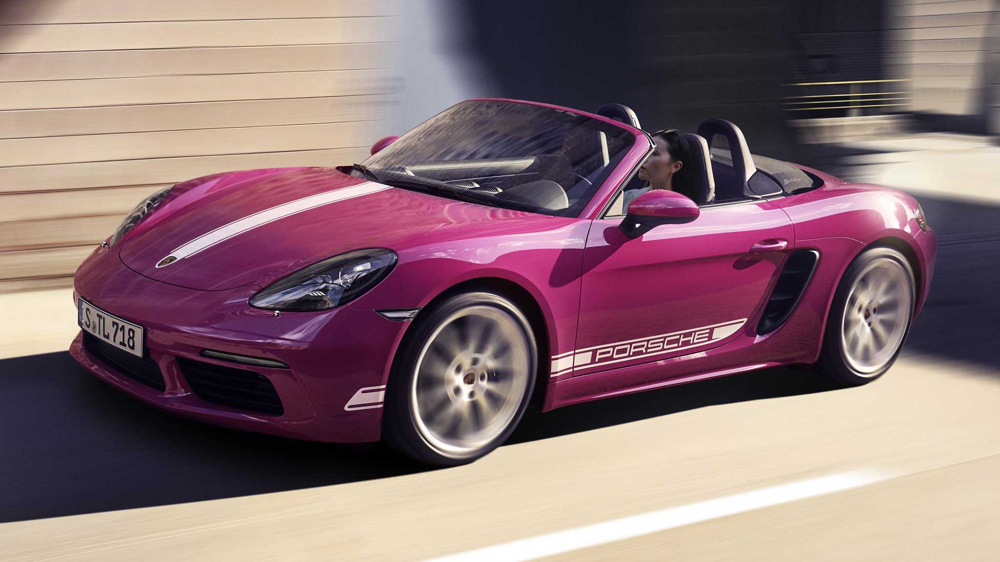
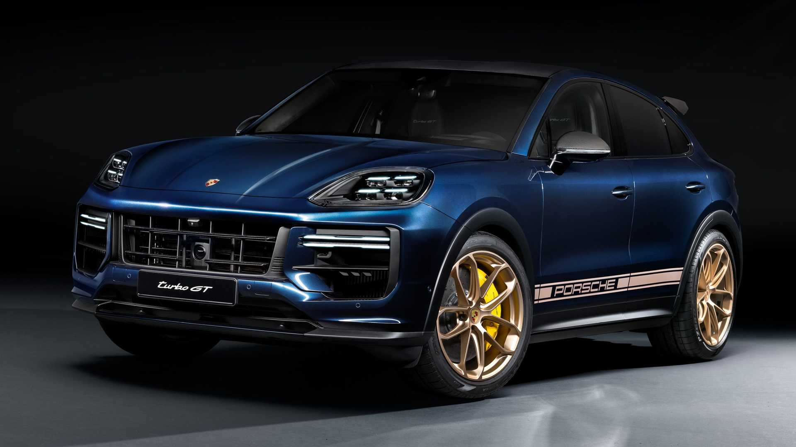
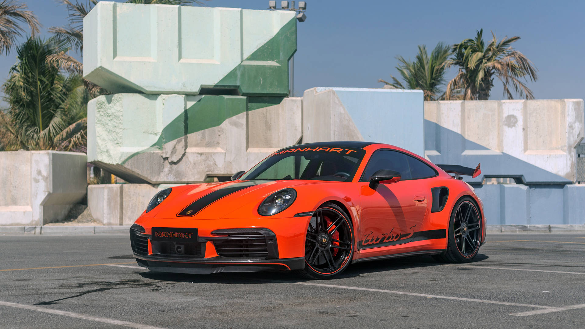
Mercedes-AMG
Thành lập: 1967 bởi Hans Werner Aufrecht và Erhard Melcher tại
Affalterbach, Đức. Đặc trưng: “One man, one engine” – mỗi động cơ AMG
được lắp ráp thủ công bởi một kỹ sư. Mẫu xe nổi bật: AMG GT, SLS AMG,
C63 AMG, Project ONE (siêu xe F1 cho đường phố). Triết lý: “Driving
Performance” – biến sức mạnh đường đua thành trải nghiệm lái hằng ngày.
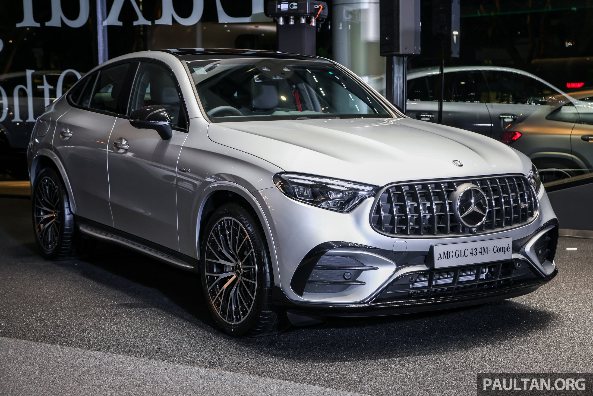
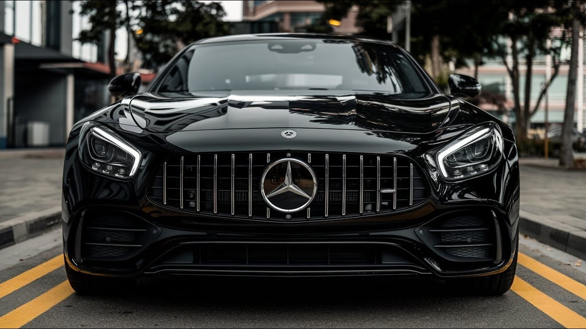

Bugatti
Thành lập: 1909 bởi Ettore Bugatti tại Molsheim, Pháp. Đặc trưng: Xa xỉ,
thủ công, hiệu suất cực hạn. Mẫu xe nổi bật: Type 35, EB110, Veyron,
Chiron, Divo, La Voiture Noire, Bolide. Triết lý: “If comparable, it is
no longer Bugatti” – không có sự so sánh, chỉ có độc nhất.
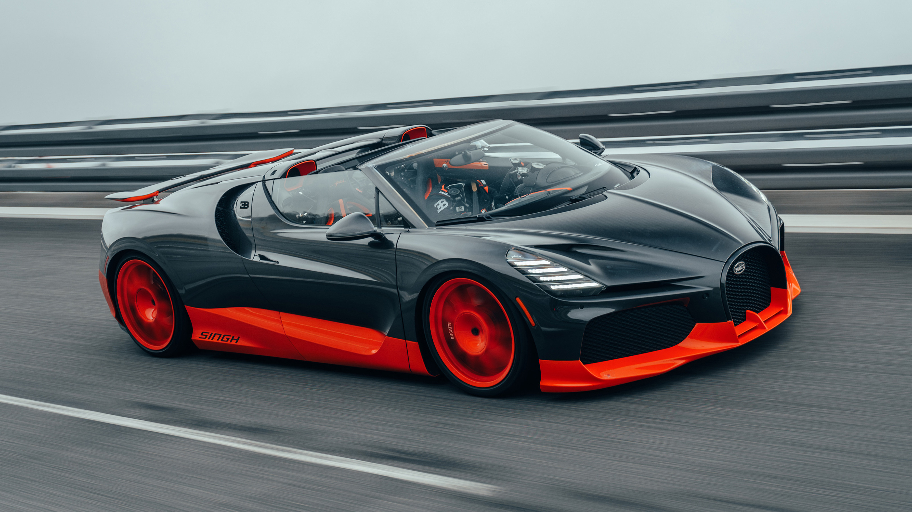
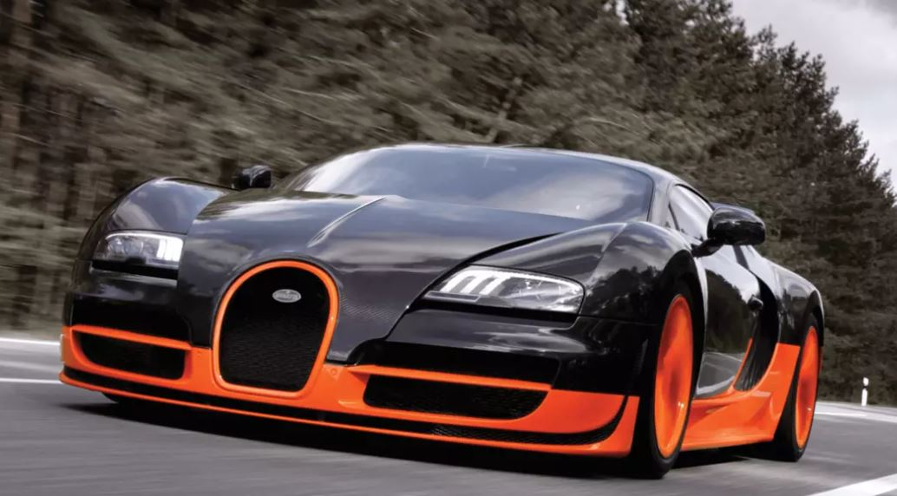